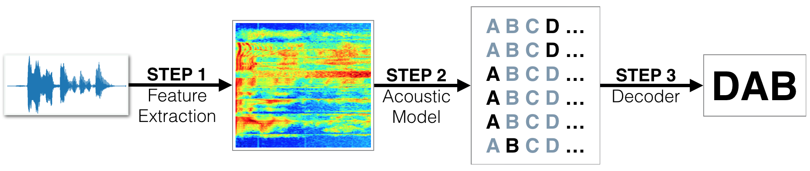

Speech Recognition using DNN network
March 30, 2021
Flow to detect voice command
Using a deep neural network that functions as part of an end-to-end automatic speech recognition (ASR) pipeline!
Use CNN network to achieve voice command.
We begin by investigating the LibriSpeech dataset that will be used to train and evaluate your models. Your algorithm will first convert any raw audio to feature representation.
You can download the example from my Github repository.